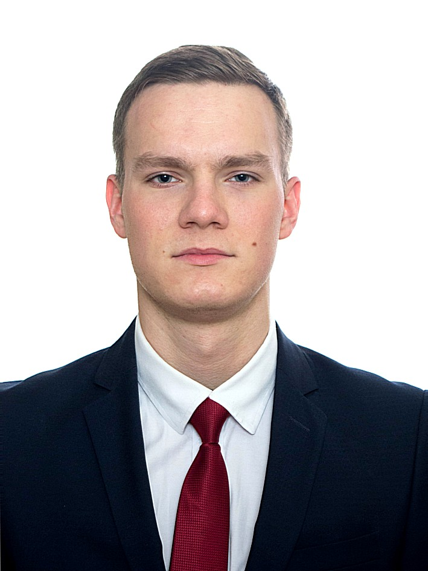
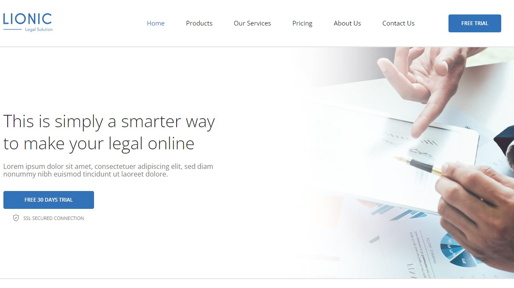
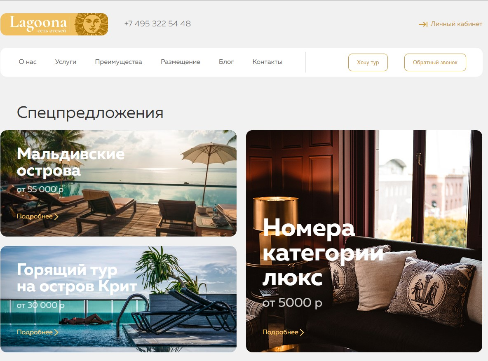
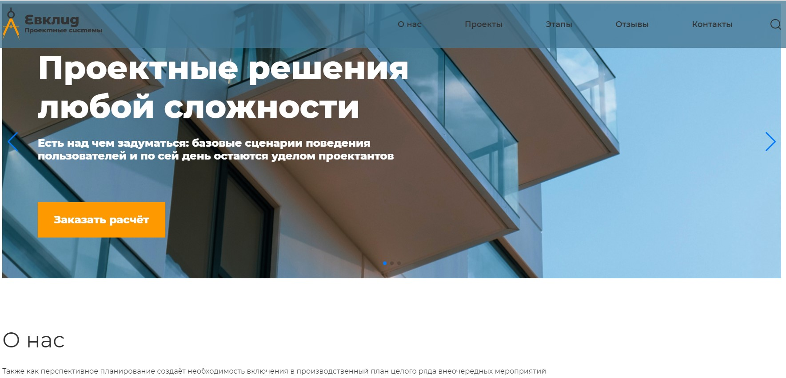

Junior верстальщик, frontend-developer

На данный момент, студент 5-ого курса Московского Государственного Технического Университета (МГТУ) имени Н.Э. Баумана, успешно обучаюсь на факультете Информации и Автоматизированных систем управления (ИУ-1), но так получилось, что это совсем не то, чем я хотел заниматься, поэтому уже с первого курса начал пробовать себя в различных сферах. Начинал с 3D-моделирования, уделил данному ремеслу 2 года, получил много опыта и даже работал на фрилансе в этой области, но в связи с текущими реалиями общения с зарубежными заказчиками, пришлось сменить род деятельности в пользу IT, благо в ВУЗ'е уделялось время на прокачку навыков программирования, не такой сильный объем работы как в IT-ВУЗ'ах, но уже позволило, понимать наисанный код и учавствовать в его написании, с начала марта 2022 года определился с вектором дальнейшей деятельности и это frontend-разработка, всё-таки навыки 3D-моделирования и дизайна в целом имеют связь в области верстки и описания стилей, интерес в данной области возникает из-за возможности творить, делать что-то, что удивит самого себя, естественно готовые макеты от профессиоальных дизайнеров вызывают приятное удивление и наличие вкуса у людей, и на данном этапе получалось только верстать и интерактивить по чужим макетам, но и всетаки не на дизайнера учусь. Хочется окунуться в атмосферу работы в команде, где каждый контролирует свою стихию, опытный сотрудник готов ответить на любой глупый вопрос, без откладывания мысли о непрофессионализма.
Серьезно подхожу к поставленной задаче, научен доводить работу до конца, устранять мелочи, адекватно отношусь к критике, желательно конечно конструктивной, выполняю верстку, на данный момент уже и адаптивную (резиновую), придерживаюсь доступности и кроссбраузерности, а также на уровне владею css описанием, знаком со сложными селекторами, но сам предпочитаю придерживатся БЭМ-методологии, всё-таки порядок куда приятнее хаоса. С недавней поры начал вводить интерактив с использованием JS-скриптов, одновременно почитывая литературу по JS и TypeScript, в скорейшем времени выйду на необходимый минимум в понимании языков.

Мой первый сайт, здесь не так много самостоятельной работы.

Данная страница уже включает базовый интерактив и выполнялась полностью самостоятельно.

Первыми порами работы стало прочтение раздела о Web-разработке ресурса: Metanit.com, после чего блуждал в поиске бесплатных курсов, и остановился на skillbox, по причине даваемого объема знаний, здесь дается не так много теории как хотелось бы, но очень много практики, что не могло бы меня не радовать, ведь учение познается в изнурительном труде, макеты к вышеприложенным страницам были взяты оттуда, для этого использовался figma и photoshop.